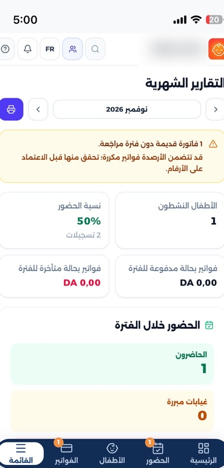
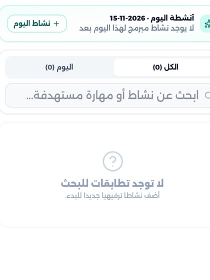
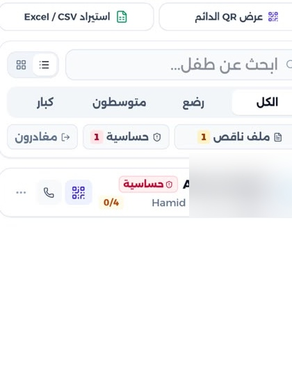

نسبة الحضور
50%
2 تسجيلات · نوفمبر 2026.
RAPPORTS
الحضور خلال الفترة
حاضرون وغيابات في عمود واحد، بلا حسابات.
Rawdha+تسيير الحضانة، ببساطة
تقرير الشهر في صفحة
شهر كامل، في رقم وثلاثة بطاقات.
الحضور، الفواتير المتأخرة، والأطفال النشطون — من نفس الشاشة.
حضور
50%
تسجيلات
2
متأخرة
1
01
مؤشر الفترة
نسبة الحضور والتسجيلات.
02
تنبيه الفاتورة
مراجعة قبل الاعتماد.
03
تصدير
CSV للوليّ أو للمحاسبة.

01مؤشر الفترة

02تنبيه الفاتورة

03تصدير
«الحضور خلال الفترة» + «الفواتير المعلقة»
تقرير واحد، بلا Excel.
حضور
50%
تسجيلات
2
متأخرة
1
افتحي تقرير نوفمبر←Rawdha+ · 07